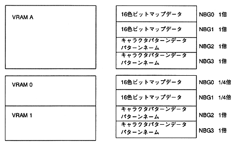

#include <machine.h> #include "sega_scl.h"/ * Set cycle pattern table * / Uint16 n0_cycle [] = {0x44ff, 0x0fff, / * Character pattern of VRAM A (A0) NBG0 And pattern name table * / 0xffff, 0xffff, / * VRAM A1 VRAM A is not divided * / /* unused */ 0xffff, 0xffff, / * VRAM B (B0) no data * / 0xffff, 0xffff}; / * VRAM B1 VRAM B is not divided * / / * Not used * /
extern Uint16 ColData []; / * Pallet data pointer * /
SclConfig scfg; main() { SCL_Vdp2Init (); / * Initialize VDP2 library * /
SCL_SetDisplayMode(SCL_NON_INTER,SCL_224LINE,SCL_NOMAL_A); / * Set screen mode * /
SCL_SetColRamMode(SCL_CRM_2048); / * Color RAM mode setting * / SCL_AllocColRam(SCL_NBG0,256,ON); / * Secure pallet area * / SCL_SetColRam(SCL_NBG0,0,265,ColData); / * Set palette data * /
..... / * Scroll data is stored in VDP2 VRAM. */ SCL_InitConfigTb (& scfg); / * Scroll NBG0 configuration initialization * /